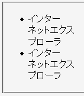
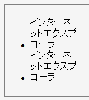

li要素やli要素の子孫要素に幅（widthプロパティ）が指定されているとき、リストマークが各リストアイテムの最後の行の行頭に表示されてしまう。
<ul> <li style="width:5em;">インターネットエクスプローラ</li> <li><div style="width:5em;">インターネットエクスプローラ</div></li> </ul>
li要素の幅を指定した場合と、li要素の子要素に幅を指定した場合の例です。
Moz1.0.1での表示（標準モード）
WinIE6.0での表示（標準モード）
WinIE6.0では標準・互換の両モードで不具合の発生が確認されました。